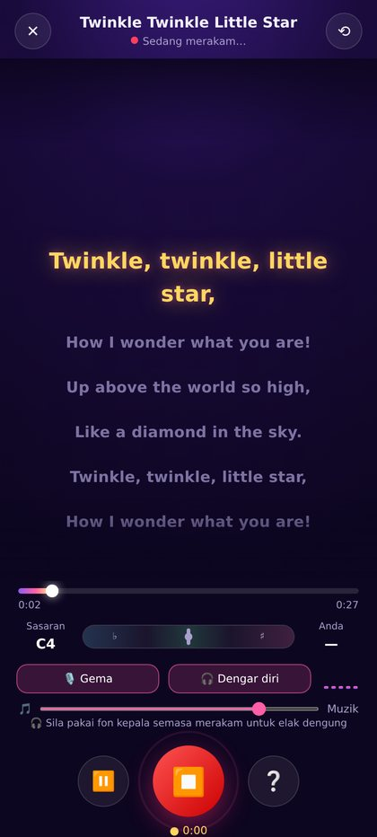
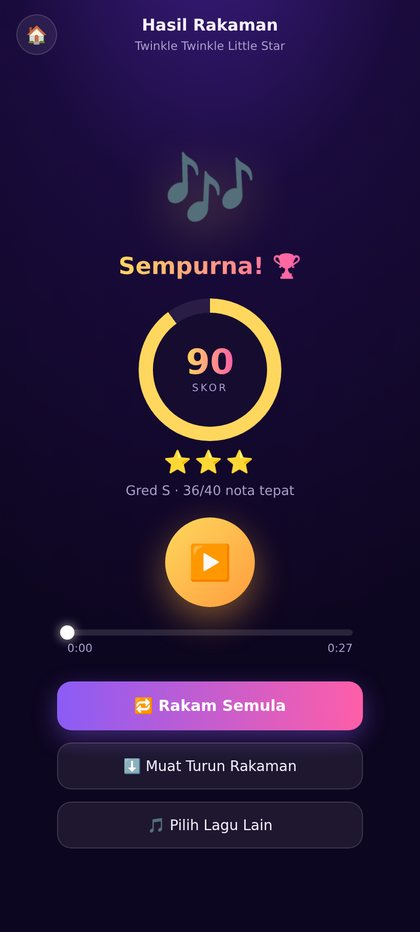
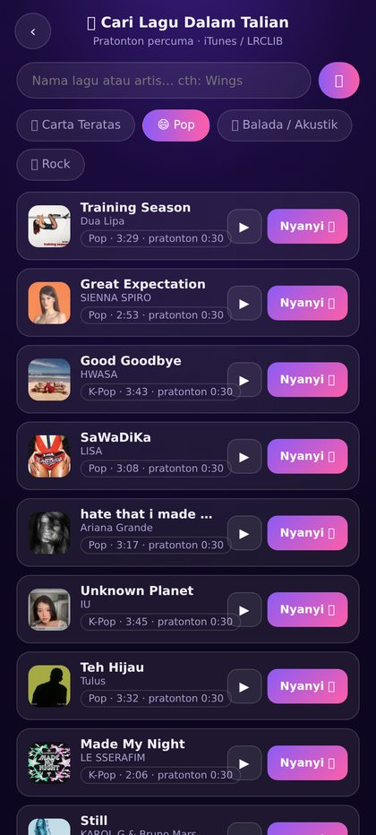
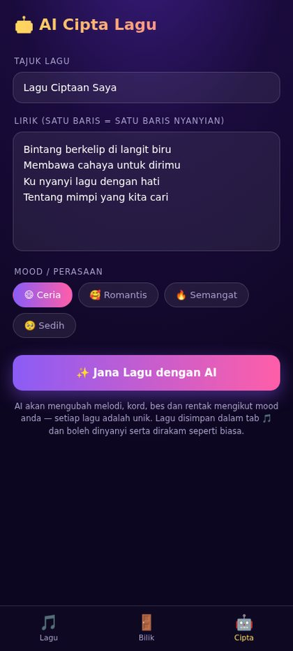
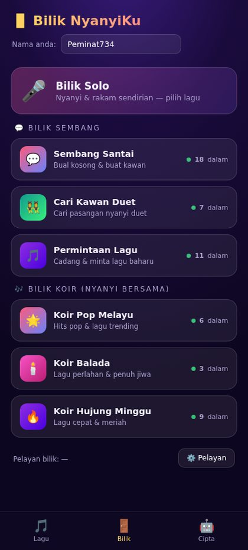
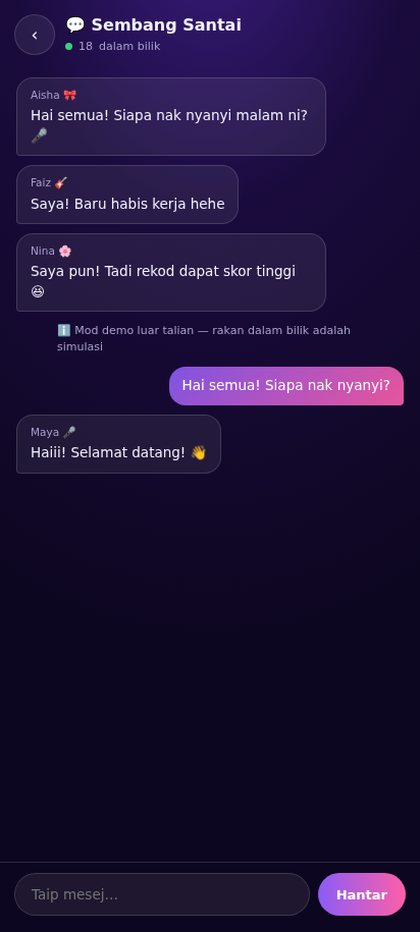
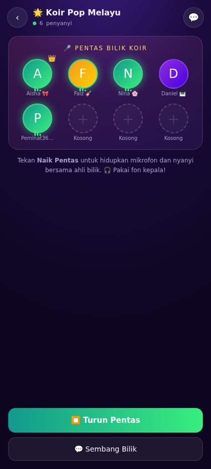

Lirik bergerak, rakaman dengan kesan suara studio, penjana lagu AI, serta bilik solo, sembang dan koir — semuanya dalam satu aplikasi ringan yang berfungsi di luar talian.

Muat naik fail MP3 dan lirik bergerak dicari automatik dalam talian (percuma, tanpa kunci API) — atau guna fail .LRC anda sendiri. Mahu lagu asli? Taip lirik dan biar AI menggubah melodi, kord serta rentak — setiap ciptaan unik dan terus boleh dinyanyi.
Sama seperti aplikasi karaoke profesional: baris lirik bersinar mengikut masa, dan suara anda dirakam bersama iringan.
Sambil anda menyanyi, aplikasi mengesan pic suara anda dan membandingkannya dengan nota sasaran lagu secara langsung — jarum hijau bermakna anda tepat pada nadanya.

Butang Cari Lagu Dalam Talian membuka katalog luas terus dalam aplikasi: cari mana-mana artis atau lagu, atau layari carta tersusun mengikut genre. Percuma, tanpa daftar atau kunci API.
ℹ️ Klip pratonton mengandungi vokal asal (30 saat) untuk latihan & penerokaan; bukan trek karaoke penuh.

Taip beberapa baris lirik, pilih perasaan — Ceria, Romantis, Semangat atau Sedih — dan AI mengubah melodi mengikut suku kata, memilih kord, bes dan rentak yang sesuai.

Tukar kesan dengan satu sentuhan semasa merakam — gema klasik karaoke atau ruang gema yang luas.
Berlatih sendirian dalam Bilik Solo, berbual dalam Bilik Sembang, atau naik pentas dalam Bilik Koir dengan suara ahli lain melalui WebRTC masa nyata.



Dalam kemas kini akan datang, NyanyiKu akan menganjurkan cabaran nyanyian mengikut tema — hantar rakaman terbaik anda, kumpul skor pic tertinggi, dan naik papan pendahulu komuniti.
Muat turun NyanyiKu v0.8.0 untuk Android — wajah baharu ala StarMaker: tab Bilik Parti, suapan Detik menegak, Mesej & Notis, profil penuh Saya, serta Bilik Saya gaya keluarga. Percuma, tanpa akaun.
⬇ Muat Turun APK (~7 MB) ▶ Cuba di Pelayar